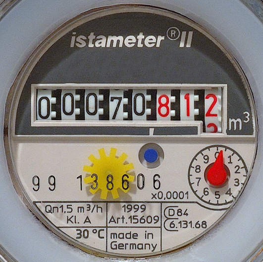

Why Track Water Usage?
Monitoring your water consumption helps you identify wasteful habits, set conservation goals, and measure your progress over time. Studies show that households that track their water usage reduce consumption by an average of 15-20%.

Methods to Track Water Usage
1. Read Your Water Meter
Your water meter is the most accurate way to track usage. Located near your property line or in a basement, it measures water in cubic feet or gallons.
- Record the reading at the same time each day
- Calculate daily usage by subtracting previous readings
- Compare weekly and monthly trends
- Identify unusual spikes that may indicate leaks
2. Use Smart Water Monitors
Modern technology makes tracking easier than ever with devices that connect to your home's water supply and provide real-time data via smartphone apps.
- Whole-home monitors: Install on main water line, track total consumption
- Fixture-specific monitors: Track individual appliances and faucets
- Smart irrigation controllers: Monitor outdoor water use and adjust automatically
- Leak detection sensors: Alert you immediately when leaks occur
3. Manual Tracking Methods
You can track water usage without special equipment by timing and estimating your consumption:
- Time your showers and multiply by flow rate (typically 2.5 gallons/minute)
- Count dishwasher and washing machine cycles (check appliance specs for gallons per load)
- Track toilet flushes (standard toilets use 1.6-7 gallons per flush)
- Use a bucket to measure outdoor watering
Average Household Water Usage
Daily Per Person Averages:
- Toilet flushing: 18-24 gallons
- Showers and baths: 20-30 gallons
- Faucets (washing hands, brushing teeth, cooking): 8-12 gallons
- Laundry: 8-15 gallons
- Dishwashing: 2-4 gallons
- Outdoor/Landscape: Varies widely by season and location
Total: Average person uses 80-100 gallons per day
Setting Conservation Goals
Once you understand your baseline usage, set realistic reduction targets:
- Beginner: Reduce usage by 10% (8-10 gallons/day per person)
- Intermediate: Reduce usage by 20-25% (16-25 gallons/day per person)
- Advanced: Reduce usage by 30%+ (24+ gallons/day per person)
Creating a Water Usage Log
Maintain a simple tracking system:
- Record meter readings daily at the same time
- Note any unusual activities (guests, car washing, gardening)
- Calculate daily, weekly, and monthly totals
- Compare periods to identify trends
- Celebrate reductions and investigate increases
Identifying Water Waste
Look for these common signs of inefficiency:
- Meter running when no water is being used (indicates leaks)
- Sudden spikes in daily usage
- Higher bills without increased usage
- Wet spots in yard or near foundation
- Running toilets or dripping faucets
Smart Apps and Tools
Several apps and online tools can help you track and analyze your water usage:
- WaterHawk: Manual logging with charts and goal tracking
- Dropcountr: Utility data integration and personalized tips
- Flume: Real-time monitoring with smart home integration
- EPA WaterSense Calculator: Estimate usage and potential savings
Pro Tip:
Check your water meter before bedtime and again first thing in the morning without using any water. If the meter changed, you likely have a leak that's wasting water 24/7.
Benefits of Consistent Tracking
- Lower water bills (average savings of $170/year)
- Early leak detection prevents costly damage
- Awareness leads to behavior change
- Environmental impact reduction
- Preparation for water restrictions or shortages
- Increase home value with documented efficiency